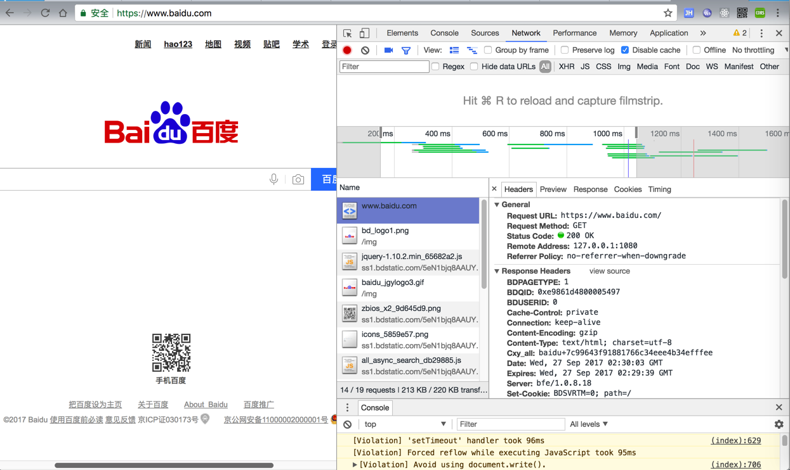
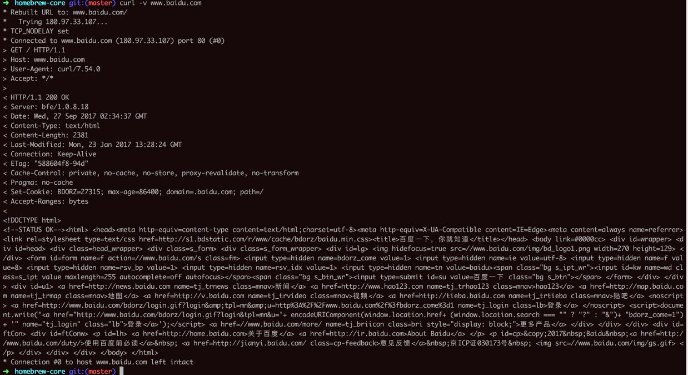
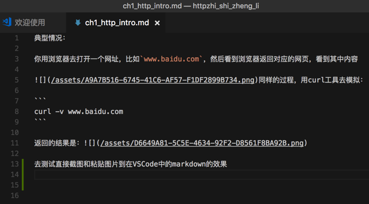
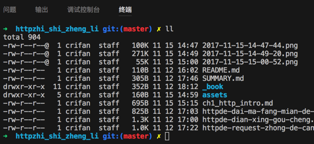

典型情况
你用浏览器去打开一个网址，比如www.baidu.com，然后看到浏览器返回对应的网页，看到其中内容
同样的过程，用curl工具去模拟：
curl -v www.baidu.com
返回的结果是：
去测试直接截图和粘贴图片到在VSCode中的markdown的效果 
再去截图我自己网站，粘贴过来看看效果：
在新建了配置文件后，再去试试截图看看能否保存到我要的，当前文件夹下assets/img中
修改了用户区配置，看看是否有效：

给VSCode的终端截个图： 